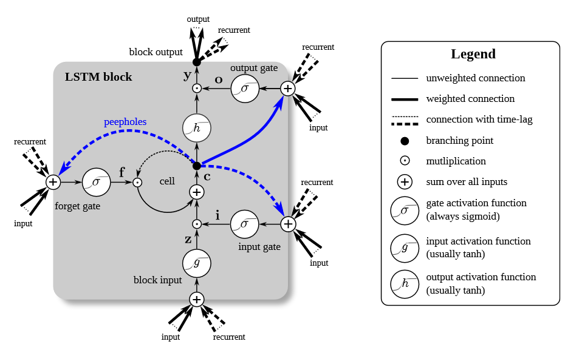
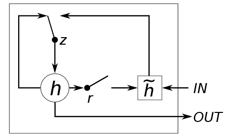

LSTM is developed to solve vanishing gradient problem.
In LSTM architecture, a concept of a memory cell has been introduced to act like an accumulator. After that, it has three inputs (first input is input at that time step, second from previous neuron, and third one from memory cell), and two outputs (one as output, one to be fed back into the system). Also, it has three gates – input gate, forget gate and output gate. Sigmoid function (σ) is used as gates activation function, whereas hyperbolic tangent (tanh) is used as input and output activation function (Greff et al., 2017). LSTM can be understood better with equation as below:
`c_(t)=f_(t) ⊙ c_(t-1) +i_(t) ⊙ctilde`t
`ctilde`t `=g(W_(c)x_(t) + U_(c)h_(t-1) +b_(c))`
`h_(t)=o_(t) ⊙ g(c_(t))`
where `c_(t)` is current memory cell, `f_(t)` is forget gate, `c_(t-1)` is memory cell at previous time step, `i_(t)` is input gate, `ctilde`t is an upcoming memory cell. Also, `g` is element-wise function, `W`, `U`, `b` are weights and bias. `h_(t)` is hidden state at time `t` and `o_(t)` is the output gate.
LSTM architecture with RNN is proven to store long-term dependencies and thus to solve the vanishing gradient problem.
GRU is another architecture to solve the vanishing gradient problem of RNN.
In GRU architecture, there is no memory cell, and it has only two gates called update gate and reset gate. Update gate decides how much the unit updates its information or adds new. Reset gate decides how much the unit forgets previously computed information (Cho, Chung, Gulcehre and Bengio, 2014). GRU can be represented with these equations:
`h_(t)= (1-z_(t) ⊙ h_(t-1) + z_(t) ⊙ htilde`t`)`
`htilde`t`= g(W_(h)x_(t) + U_(h)(r_(t) ⊙ h_(t-1)) + b_(h)`
`z_(t) = σ(W_(z)x_(t) + U_(z)h_(t-1) + b_(z))`
`r_(t) = σ(W_(r)x_(t) + U_(r)h_(t-1)+b_(r))`
Notations are similar to LSTM architecture. In addition, we have here `r` as reset gate and `z` as update gate. GRU is faster to train than LSTM, however, both are equally reliable in solving the vanishing gradient problem to get better predictions.
References :
[1] Chung, J., Gulcehre, C., Cho, K. and Bengio, Y., 2014. Empirical evaluation of gated recurrent neural networks on sequence modeling. arXiv preprint arXiv:1412.3555.